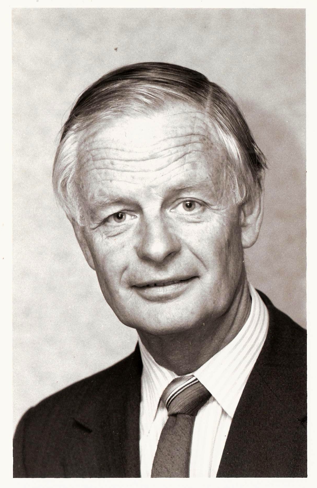

I have resurrected Robin Johnson's economic's webpage using Github and Gitpages.
I have decided that the content of this website, Robin's papers, should be available under a Creative Commons license. I chose the Creative Commons Attribution 4.0 International License as it is the most open of the Creative Commons licenses. In other words, please feel free to copy, distribute, and adapt this content with the only proviso being to give a citation to the original content. Remember there is no 't' in 'Johnson'.
Here is a nice photo of Robin. I am not sure exactly when it was taken or what the event was. 
I have updated the bibliography. It now has 250 entries.
Life Membership of New Zealand Agricultural Economics Society (NZAES). In 1996, Robin was made the first life member of the New Zealand Agricultural Economics Society (NZAES). This is the recommendation, moved by Ram SriRamaratnam, the 1996 President.
I have just added the paper Livestock and Feed Policy in New Zealand: 1975 to the Present which Robin wrote in 1985 and 1986 when he worked for the Centre for Applied Economics and Policy Studies at Massey University.
New on the site is Cost benefit and the environment debate which Robin wrote in 1996 about the proposed Hazardous Substances and New Organisms Bill (or "HASNO").
I have just uploaded a book review Robin wrote 'Book Review' of Social Policy in Aotearoa New Zealand, (Fishpond Google Books) by Christine Cheyne, Mike O'Brien and Michael Belgrave, Oxford University Press, Auckland 1997. 281 pp. This book review was appeared in the periodical Public Sector, Vol 20, No. 3, p 26. in September 1997.
I have scanned edited and uploaded a new paper: The Changing Institutional Environment, a paper presented for the Massey Centre for Agricultural Policy Studies.
Here is a newly edited paper on the website: Johnson R W M (1992) Resource management, sustainability and property rights: are our structures adequate?
I have just uploaded a new paper to Robin's website. It is:
RWMJ (1992m) 'Impact assessment and risk management in New Zealand agriculture: integrating local, regional and national farm models', In: 'Regional and Catchment Modelling', Agricultural Systems & Information Technology, Vol 4, No 2, November 1992, Bureau of Resources, ACT, Australia. From the abstract: 'This paper describes methodologies and results achieved with local and regional models for agricultural impact analysis both within the agricultural sector and on other sectors in New Zealand.'
I have just uploaded a new paper to Robin's website. It is:
RWMJ (1988e) 'Adjustment in agriculture: agribusiness', Discussion Paper 121, Vol 1: 103-112, Agribusiness and Economics Research Unit, Lincoln College, University of Canterbury.
This was a paper presented to the July 1988 annual meeting of the NZ branch of the Australasian Agricultural Economics Society. Here is the abstract.
This paper reviews changes in the agribusiness sector since 1984. Evidence is based on available statistics and some anecdotal information. Considerable changes are identified in factor markets, input markets and service markets. Main features include rapid increases in factor productivity, stabilization of service prices (except interest), a decline in investment and a decline in balance sheet assets. Amalgamation and restructuring has occurred in the input and service industries and surplus capacity still exists at several points. Outputs can only be maintained at current high levels by disinvestment in the capital base. The agribusiness sector is likely to settle down at some new lower level of output and investment with increased levels of productivity in the medium term.
I sent an email to John Key about his statement to Parliament of 9 February 2010 proposes more economic growth through more mining in conservation areas. He states that mining uses only 40 square kilometres of land which is less than 0.015 percent of NZ's total land; that new mining will meet strict environmental tests and that increased mining will improve the natural environment via an "off-setting" conservation fund. I have included his words at the end of the post
I read in the Yale Environmental Performance Index 2010 that New Zealand's rank has fallen from 7th to 15th place.
I thought about the Story of Cap and Trade some more.
The Story of Cap & Trade from Story of Stuff Project on Vimeo.
23 October 2009. I have uploaded another paper. It is 'The Resource Management Act and property rights', from the Proceedings of the Annual Conference New Zealand Association of Economists and the Agricultural Economics Society (NZ Branch), 24-26 August 1992.
4 October 2009. I have scanned and edited another paper from Robin's collection and uploaded it. It is; 'RWMJ1995a'; 'Further Thoughts on Constitutions, Institutions and Collective Decision Making', Contributed Paper, 39th Annual Conference of the Australian Agricultural Economics Society, Perth, WA, February 14-16 1995.
23 September 2009. I have just added a new paper to the bibliography and to the web site. Johnson R W M (1999h), Assessing the Implementation of Government Policy: International Experience, Australian Agricultural & Resource Economics Society News & Views 11:3, December 1999.
9 September 2009. Updated papers.
19 August 2009. Updated pages that could be tidied.
23 July 2009. At Robin's funeral we had a 'memory board' - a display of photos of Robin. Based largely on the same photos here is an image gallery for Robins webpage. It features images of Robin on mountaineering trips in the Southern Alps from the late 1940s to early 1950s.
18 July 2009. Today is the first anniversary of Robin's death. I marked the day by walking from Karori West via Makara Road and Johnston's Hill to Mt Kaukau, along the ridges just west of Karori, Wilton, Chartwell and Ngaio. Although I had not walked to Mt Kaukau for at least fifteen years, Robin and I had walked from Mt Kaukau many times.
The overcast weather cleared as I walked and the afternoon became fine and warm until the final gentle climb to Mt Kaukau when the sun was low over the Tasman Sea. There was no wind and no movement of the Makara 'West Wind' turbines. The Ohariu valley farmland was a gleaming shade of green in the low winter sun.
When Robin and I first walked from Mt Kaukau to Johnston's Hill, in the 1970s, the walk was an informal route mostly over private farmland. Now, Wellington City Council has negotiated formal access for both walkers and mountain bikes, the route is sign-posted as are the ways off the main route to the suburbs, and it has a name. "the Skyline". Robin just used to call the walk 'Mt Kaukau to Johnston's Hill'.
I left home in Allington Road at 11:30am, started 'the Skyline' route at 11:45am at Makara Road, and reached Mt Kaukau at 3:15pm. I walked down to Nairnville Park (Cockayne Road) and caught a No 44 bus to the Railway Station then a No 3 bus back to Karori.
16 May 2009. Investment in private Research and Development before 1989: use of proxies is now tidied up.
15 May 2009. I must start a "To Tidy" list of web pages to tidy up. rwmj2006c.html needs work on tables and quote marks (Now done). The Structure and Economic Impact of R & D Organisation in New Zealand (rwmj2005d.html) needs a bit of editing (Now done). On the Research and Development page the pdf link needs fixing. 'Methodologies for Measuring the Accumulated Knowledge Base in R & D (Download PDF)'.
12 May 2009. I have set a blog at Google's Blogger for Robins Economics Web page. It will help point search engines to the new URL at Telstra-Clear. It is http://rwmjohnson.blogspot.com/.
6 May 2009. Most of the the material from the Robin's Economics Web Page has now been uploaded to it's new home.
2 May 2009. Robin's home page is now being hosted by Telstra-Clear's Paradise free web hosting service. Robin's email address for many years was via Clear, then Paradise. So we are eligible for some free hosting. Thank you Paradise.
Yahoo is closing all the 'free' Geocities home pages. I won't miss Yahoo Geocities. I am looking forward to advertisement-free webapages that print easily and that can be validated with the W3C. Valid html mark-up is mangled as soon as it is uploaded as the Yahoo Geocities server inserts bizarre scripts to display the advertisements panel. I agree with this Geocities user on CNET reviews: terrible long-term choice...No tool that creates code this strange should be given a favorable rating without some serious qualifiers.
Other comments on Yahoo Geocities include; terrible, horrific, could only be worse if the power went out, and that Yahoo Geocities is inept, incompetent, imbecilic, wretched in every respect, and utterly breathtaking in the sheer breadth of suckage.
22 April 2009. I have re-edited and uploaded Did Peter Gorringe get it right? reflections on the Williamson diagnosis and Interest Groups, Pressure and Policy Determination (1994).
20 April 2009. I have edited and uploaded two more papers about Research and Development; Methodologies for Measuring the Accumulated Knowledge Base in R & D. A paper contributed to the Annual Conference of the New Zealand Association of Economists, 2000; and The Structure and Economic Impact of R & D Organisation in New Zealand (2005)
10 April 2009. I have edited and uploaded Impacts of Mandatory Meat Hygiene Regulations on the New Zealand Meat Trade (2006).
9 April 2009. This page now has a a back link to the home page and a print link. The print link, combined with a revised printing cascading style sheet, enables printing of web pages without any of the Yahoo Geocities advertisements. The web page will print text in black in a serif font. I will add the 'print this page' feature to the rest of the website as time allows.
2 April 2009. I have uploaded a html version of The Rate of Return to New Zealand R&D (1999), a contributed paper to Annual Conference of NZ Association of Economists, Rotorua, 29-30 June 1999.
26 March 2009. I have edited and uploaded 'Veterinary Public Health: An Historical Perspective' (2002)
25 March 2009. I have edited the paper 'Crowding out and resulting trends in research fund allocation in New Zealand 1991-2000' (rwmj2000e.html). It was in the bibliography twice, once in 2000 and again incorrectly in 2001.
16 February 2009. The site now has a tidied up html version of Productivity in the Sheep Sector (2004).
9 February 2009. I have uploaded a tidied-up html version of The Analytics of Dairy Company Amalgamation (NZARES 2001).
6 February 2009. I have finally uploaded a tidied-up html version of Is there a measurable aggregate production function: examples from agriculture? (Unpublished 2001).
3 February 2009. I have uploaded a tidied-up html version of The Contribution of Agriculture to the National Economy of New Zealand, a paper contributed to 1999 Annual Conference of the Australian Agricultural and Resource Economics Society.
29 January 2009. I have uploaded a tidied-up html version of The Challenge of Native Title, (2005), a contributed paper to the 2005 meeting of the Australian Agricultural Economics Society at Coffs Harbour.
27 January 2009. I have uploaded a tidied-up html version of Agriculture and Trade in Sub-Saharan Africa: A Review, Outlook on Agriculture 34(2), pp 71-76, 2005.
26 January 2009. I have uploaded an obituary for Robin. Rod Forbes and I wrote it. Its in the family history section
15 November 2008. Recent trends in dairy farm productivity (2002) is now tidied.
11 November 2008. I have found two more papers to include in the bibliography. 'Molesworth - The Economic Record', Tussock Grasslands and Mountain Lands Institute Review, No 14, pages 17-20, March, 1968, and, 'The economics of land retirement. A case study'. Tussock Grasslands and Mountain Lands Institute Review, No 18, pages 8-15, March 1970. The bibliography total is now 158 papers. And 'commissioningdraft2.html' is finished.
23 October 2008. I put some footnotes into 'commissioningdraft2.html'.
17 October 2008. Robin has had another paper published in The New Zealand Genealogist. 'Working with the YMCA during World War One' is an account of the war experience of Robin's father, John Johnson. That increases the number of papers recorded on Robin's bibliography to 156.
14 October 2008. Pages that could be tidied.
27 September 2008. I have given the index page a makeover and I have created some separate pages for the topics that used to be on the old index.